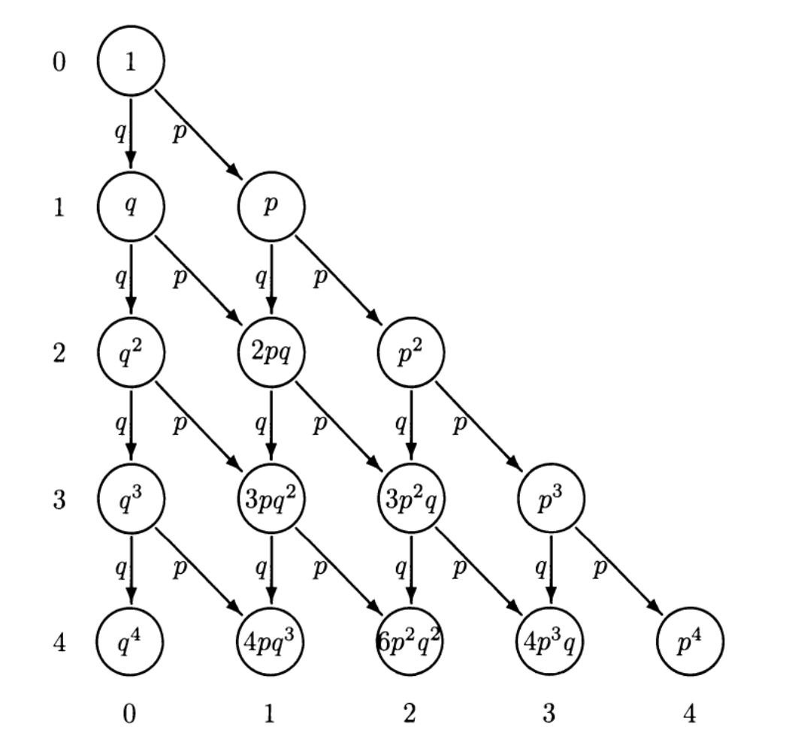

Apéndice D: Probabilidad y estadística
PROBABILIDAD Y CONTEO
Intuitivamente, se define la probabilidad como la chance de que un evento ocurra frente a todo el universo de posibilidades. Si se tiene un espacio muestral, definido como el conjunto de todos los resultados posibles que pueden ocurrir con igual probabilidad, y un evento \(A\), se define la probabilidad del evento \(A\) como \(P(A) = \frac{\textit{casos favorables}}{\textit{casos posibles}}.\)
Las probabilidades cumplen tres reglas: 1. Son siempre positivas \((P(A)\leq 0)\) para cualquier evento. 2. \(P(\Omega) = 1\) donde \(\Omega\) es el espacio muestral. 3. Dados \(k\) eventos incompatibles (que no pueden ocurrir en simultáneo), \(P(A\cup B\cup...\cup K) = P(A) + P(B) + ... + P(K).\)
Sin embargo, contar los casos favorables no siempre es una tarea sencilla, por lo que se utilizan elementos de la teoría combinatoria para facilitar el conteo.
Número factorial: El número \(n\) factorial, denotado por \(n!\), se define como el producto de todos los números entre \(1\) y \(n\): \(\Rightarrow n! = n \times (n-1) \times (n-2) \times ... \times (n-n+1).\)
Arreglos: Los arreglos definen el número total de formas en que se pueden elegir \(k\) elementos ordenados de un total de \(n\) elementos. Para elegir el primer elemento se tienen \(n\) opciones. Para el segundo elemento ya se descartó una opción, por lo que se pasa a tener \(n-1\) posibilidades. Así sucesivamente hasta llegar al elemento \(k\), para el cual se tienen \(n-k+1\) opciones. El número total de posibilidades se define entonces cómo: \[(n)_k = (A)_k^n = n \times (n-1) \times (n-2) \times ... \times (n-k+1) = \frac{n!}{(n-k)!}.\]
Combinaciones: Las combinaciones definen el número total de formas en que se pueden elegir \(k\) elementos no ordenados de un total de \(n\) elementos. Si se tiene una lista no ordenada de \(k\) elementos, se pueden formar \(k!\) listas ordenadas. Esto quiere decir que por cada lista no ordenada, hay \(k!\) listas ordenadas, lo que implica que las combinaciones no son más que arreglos divididos por \(k!\). Por tanto: \[\begin{pmatrix} n \\ k \end{pmatrix} = C_k^n = \frac{(A)_k^n }{k!} = \frac{n!}{k!(n-k)!}.\]
Probabilidad condicional
La probabilidad condicional define la probabilidad de que ocurra un evento cuando se sabe qué ocurrió previo a él. Formalmente, se tienen dos eventos \(A\) y \(B\) del espacio muestral \(\Omega\) y se conoce que \(P(B) > 0\). Se define la probabilidad de \(A\) dado \(B\) como \(P(A|B) = \frac{P(A \cap B)}{P(B)}.\)
Ejemplo: Se tiran dos datos y se quiere saber la probabilidad de que la suma sea siete (a este evento lo llamaremos \(A\)) dado que uno de ellos muestra un uno (evento \(B\)). Por la definición de probabilidad condicional, queremos calcular \(P(A|B) = \frac{P(A \cap B)}{P(B)}\).
Comenzamos calculando la probabilidad de \(B\). De los 36 resultados posibles (\(6^2\)), 11 de ellos tienen un uno en al menos uno de los dados \(\Rightarrow P(B) = \frac{11}{36}\).
Para la probabilidad de la intersección, hay que tener en cuenta que hay 6 combinaciones posibles con las cuales la suma de los dos dados da 7. Sin embargo, solo dos de ellas contienen un uno en alguno de los dos dados, por lo tanto: \(\Rightarrow P(A \cap B) = \frac{2}{36}\).
Juntando los dos resultados, obtenemos que \(P(A|B) = \frac{\frac{2}{36}}{\frac{11}{36}} = \frac{2}{11}\).
VARIABLES ALEATORIAS
Una variable aleatoria es una función \(X: \Omega \rightarrow \mathbb{R}\) que a cada elemento \(\omega\) del espacio muestral le asigna un número real \(X(\omega)\). Se definen variables aleatorias discretas o continuas en función de como está conformado el espacio muestral. Una variable aleatoria es discreta si el recorrido, los valores que la variable puede tomar, es numerable. Es decir, se pueden ordenar en una sucesión. En cambio, es continua si sus valores consisten en uno o más intervalos de la recta de los reales.
Variables Aleatorias Discretas
Para las variables aleatorias discretas podemos definir dos formas de representación:
Función de probabilidad puntual: La función de probabilidad puntual de una variable aleatoria discreta \(X: \Omega \rightarrow X\) es una función \(p: \mathbb{R} \rightarrow [0,1]\), definida por \(p(x) = P(X = x)\), que indica para cada punto de \(x\) de \(\mathbb{R}\) la probabilidad de que \(X\) tome ese valor. Si \(x\) no es un posible valor de \(X\), \(p(x) = 1\). Además, \(\sum\limits_{x\in \mathbb{R}_X} p(x) =1\) debido a que en \(R_X\) están todos los posibles valores de \(X\).
Ejemplo: Función de probabilidad puntual de la suma del resultado de lanzar dos dados.
Función de distribución acumulada: La función de distribución acumulada de una variable aleatoria \(X\) es una función \(F: \mathbb{R} \rightarrow [0,1]\) definida por \(F(x) = P(X \leq x)\). \(F\) da la probabilidad acumulada al sumar las probabilidades \(p(y)\) con \(y \leq x\).
Distribución de probabilidad conjunta
La distribución de probabilidad conjunta muestra como se comportan las variables \(X\) e \(Y\) y las probabilidades de los distintos resultados posibles. Formalmente, es la función \(p: \mathbb{R}^2 \rightarrow [0,1]\) definida por \(p(x,y) = P(X = x, Y = y)\).
Las distribuciones de \(X\) e \(Y\) obtenidas a partir de la distribución conjunta se llaman distribuciones marginales.
Variables Aleatorias Continuas
Se trabajará específicamente con las variables aleatorias absolutamente continuas, pero serán nombradas variables aleatorias continuas. Para definirlas, es necesario previamente definir qué es una densidad de probabilidad.
Densidad de probabilidad: Una densidad de probabilidad es una función \(p: \mathbb{R} \rightarrow \mathbb{R}\) integrable que cumple las siguientes dos condiciones: 1. Es positiva \(p(x) \geq 0\) para todo \(x \in \mathbb{R}\). 2. \(\int_{-\infty}^{+\infty} p(x)dx = 1\).
Una variable aleatoria es absolutamente continua si existe una densidad de probabilidad \(p\) tal que \(P(X\in I) = \int_{I} p(x) dx\) para todo intervalo \(I\) de \(\mathbb{R}\).
Un ejemplo conocido de variable aleatoria continua es la campana de Gauss, donde la probabilidad de que una variable aleatoria se encuentre entre dos puntos \([a,b]\) está dada por la gráfica bajo la curva y se puede calcular usando la tabla de la distribución normal (desarollaremos más adelante).
Densidad de probabilidad conjunta
Al igual que se definió a la distribución de probabilidad conjunta para las variables aleatorias discretas, se puede definir la densidad de probabilidad conjunta para variables continuas. La densidad de probabilidad en dos variables cumple que \(p(x,y) \geq 0\) y \(\int_{-\infty}^{+\infty}\int_{-\infty}^{+\infty}p(x,y)dxdy = 1\).
Variables independientes
Para el caso de variables aleatorias discretas, se dice que son independientes si la distribución conjunta es igual al producto de las marginales: \(p(x,y) = p(x)p(y).\)
La definición de variable independiente en el caso continuo es análoga, pero para la densidad conjunta y densidades marginales.
Valor esperado
Si repetimos un experimento la suficiente cantidad de veces, el valor que tomará la variable aleatoria es el valor esperado. A continuación se define para formalmente para variables aleatorias discretas y continuas.
El valor esperado de una variable aleatoria discreta \(X\) con recorrido \(R_X\) se define como \(E(X)=\sum_{x \in R_X} x \cdot P(X = x).\)
Para variables aleatorias continuas con densidad \(p(x)\) se define como \(E(X) = \int_{-\infty}^{+\infty}xp(x) dx.\)
Propiedades importantes:
Se definen a continuación las principales propiedades del valor esperado, que aplican tanto para variables aleatorias discretas como continuas.
Propiedad 1: Sea \(X\) una variable aleatoria y \(a\) una constante cualquiera. Entonces: \(E(aX) = aE(x).\)
Propiedad 2: Sean \(X\) e \(Y\) dos variables aleatorias. Entonces: \(E(X + Y) = E(X) + E(Y).\)
Propiedad 3: Sean \(X\) e \(Y\) dos variables aleatorias independientes, estas cumplen que \(E(XY) = E(X)E(Y).\)
Varianza y Desviación Estándar
La varianza es una medida de que tan dispersos estan los valores de \(X\) respecto a su valor esperado. Para una variable aleatoria discreta \(X\) con función de probabilidad puntual \(p(x)\), la varianza se define como \(Var(X) = \sum\limits_{x\in R_X}(x-E(X))^2p(x).\)
En el caso de una variable aleatoria continua \(X\) con función de densidad \(p(x)\), la varianza se define como \(Var(X) = \int_{-\infty}^{+\infty} (x-E(X))^2p(x) dx.\)
Otra notación común de la varianza es \(\sigma^2\). La varianza tiene unidades de \(X^2\) por lo que se defina otra medida de desviación con las mismas unidades de \(X\) que resulta en un valor con mejor interpretabilidad. Se le llama desviación estándar y se define como \(\sigma = \sqrt{Var(X)}.\)
Propiedades importantes:
Se desarrollan propiedades de la varianza, que aplican tanto para variables aleatorias continuas como discretas.
Propiedad 1: Sea \(X\) una variable aleatoria y \(c\) una constante cualquiera. Entonces: \(Var(X+c) = Var(X).\)
Propiedad 2: Sea \(X\) una variable aleatoria y \(c\) una constante cualquiera. Entonces: \(Var(cX) = c^2 Var(X).\)
Propiedad 3: La varianza de una variable aleatoria \(X\) se puede calcular como: \(Var(X) = E(X^2) - E^2(X).\)
Propiedad 4: Sean \(X\) e \(Y\) dos variables aleatorias independientes, la varianza de \(X+Y\) queda definida por: \(Var(X+Y) = Var(X) + Var(Y).\)
Covarianza y Coeficiente de Correlación
La covarianza mide la variabilidad conjunta de \(X\) e \(Y\). Mide que tan asociadas estan estas dos variables aleatorias y sus respectivas dispersiones. Está definida como \(Cov(X,Y) = E[(X-E(X))(Y-E(Y))]\) que desarrollando queda $\(Cov(X,Y) = E[(X-E(X))(Y-E(Y))] = E(XY) - E(X)E(Y).\)
Si a la covarianza se la divide por el producto de las desviaciones estándar de \(X\) e \(Y\) se obtiene el coeficiente de correlacion: \(\rho = \frac{Cov(X,Y)}{\sigma_X \sigma_Y}.\)
Propiedades importantes:
Propiedad 1: Desigualdad de Cauchy - Schwarz Sean \(X\) e \(Y\) dos variables aleatorias cualesquiera \(\Rightarrow |Cov(X,Y)| \leq \sqrt{Var(X)}\sqrt{Var(Y)} \leq 1.\)
Propiedad 2: Sean \(X\) e \(Y\) dos variables aleatorias cualesquiera \(\Rightarrow Cov(X,Y) = Cov(Y,X).\)
Propiedad 3: Sea \(X\) una variable aleatoria constante \(\Leftrightarrow Cov(X,X) = 0.\)
Propiedad 4: Sean \(X\) e \(Y\) dos variables aleatorias independientes \(\Rightarrow Cov(X,Y) = 0\) dado que \(E(XY) = E(X)E(Y).\)
Propiedad 5: Sean \(X\), \(Y\) y \(Z\) tres variables aleatorias discretas y \(a\) una constante \(\Rightarrow Cov(aX+Y, Z) = aCov(X,Z) + Cov(Y,Z).\)
Ley de los grandes números
La Ley de los Grandes Números establece que el promedio de muchas realizaciones independientes de un mismo experimento está, con alta probabilidad, cerca de la esperanza de la distribución subyacente. El enunciado dice que: Sean \(X_1, X_2,...,X_n\) variables aleatorias independientes e identicamente distribuidas (i.i.d), con esperanza \(\mu = E(X_i)\) y varianza \(\sigma^2 = Var(X_i)\). Entonces, para todo \(\epsilon > 0 \Rightarrow P(|\overline{X}_n - \mu|< \epsilon) \rightarrow 1\) cuando \(n\rightarrow \infty\).
\(\overline{X}_n\) es el promedio de las variables aleatorias i.i.d que tiene como esperanza \(E(\overline{X}_n) = \mu\) y varianza \(Var(\overline{X}_n) = \frac{\sigma^2}{n}.\)
Distribuciones conocidas
A continuación se muestra una tabla donde se presentan algunas variables aleatorias típicamente utilizadas, qué experimentos modelan, su distribución, esperanza y varianza.
| Variable | Caso Prototipo | \(p_X(x)\) | \(F_X(x)\) | Esperanza | Varianza |
|---|---|---|---|---|---|
| Uniforme: \(X \sim U(n)\) | Todos los resultados equiprobables | \(\frac{1}{n}\) | 1 | \(\frac{n+1}{2}\) | \(\frac{n^2-1}{12}\) |
| Bernoulli: \(X \sim Ber(p)\) | Éxito o fracaso | \((1-p)^{1-k}p^k\) | \(\begin{cases} 1-p \textit{ si } k = 0 \\ 1 \textit{ si } k=1 \end{cases}\) | \(p\) | \(p(1-p)\) |
| Geométrica: \(X \sim Geo(p)\) | Repetir ensayos de Bernoulli hasta uno exitoso | \((1-p)^{k-1}p\) | \(\begin{cases} 1-(1-p)^{k+1} \textit{ si } k = 0 \\ 1 \textit{ si } k=1 \end{cases}\) | \(\frac{1}{p}\) | \(\frac{1-p}{p^2}\) |
| Binomial: \(X \sim Bin(n,p)\) | \(k\) ensayos de Bernoulli exitosos en \(n\) | \(\begin{pmatrix}n \\ p \end{pmatrix} (1-p)^{n-k}p^k\) | - | \(np\) | \(n(1-p)p\) |
| Poisson: \(X \sim Pois(\mu)\) | \(k\) ocurrencias con probabilidad \(\mu\) de un experimento en un periodo de tiempo \(t\) | \(\frac{e^{-\mu}\mu^k}{k!}\) | - | \(\mu\) | \(\mu\) |
| Hipergeométrica: \(X \sim H(N, q, n)\) | Urna con \(N\) bolillas, \(q\) rojas. Probabilidad de sacar \(k\) rojas en una muestra de \(n\) sin reposición | \(\frac{\begin{pmatrix} q \\ k \end{pmatrix}\begin{pmatrix} N-q\\ n-k \end{pmatrix}}{\begin{pmatrix} N \\ n \end{pmatrix}}\) | - | \(\frac{nq}{N}\) | \(\frac{nq(N-q)}{N^2} (1-\frac{n-1}{N-1})\) |
Distribución Normal
La distribución normal es de las distribuciones más conocidas en probabilidad y estadística. Su función de densidad es la conocida como Campana de Gauss y está dada por la función \(\varphi = \frac{1}{\sqrt{2\pi}}e^{\frac{-x^2}{2}}\) definida para todo \(x\in \mathbb{R}\). Esta distribución normal tiene esperanza \(0\) y varianza \(1\) por lo que la función de densidad es una campana de Gauss centrada en \(0\). Se representa por \(X \sim N(0,1)\).
De la gráfica de la distribución normal se observa que es simétrica respecto a la media. Para hallar la función de distribución acumulada debe integrarse, pero \(\varphi\) no tiene una primitiva elemental (no es expresable mediante funciones conocidas). Para calcular probabilidades usando esta distribución se utiliza la Tabla de la distribución normal que, para cada valor, indica el area bajo la curva que hay desde \(-\infty\) hasta ese punto.
Se observa que no indica el valor de probabilidad para valores menores a 0. Sin embargo, dada la simetría mencionada previamente y que la probabilidad del complemento de un conjunto que tiene probabilidad \(p\) es \(1-p\), se puede deducir que \(\phi(-x) = 1 - \phi(x)\).
Ejemplo:
Se quiere saber la probabilidad de que \(X < 2.38\). Para eso, en la tabla buscamos la fila correspondiente a \(2.3\), ya que las filas indican unidades y primer decimal. Posicionados en esa fila, buscamos la columna que corresponda a \(0.08\), dado que las columnas indican el segundo decimal. Se llega entonces a que \(P(X < 2.38) = \phi(2.38) = 0.9913\). Si se quisiera calcular la probabilidad de \(X > 2.38\) basta con calcular la probabilidad del complemento, por lo que \(P(X > 2.38) = 1-\phi(2.38) = 0.0087\).
En el caso de querer calcular la probabilidad de que \(X < -2.38\) se utiliza la propiedad de simetría. Se observa que la cola gaussiana a la izquierda de \(-2.38\) es igual a la cola a la derecha de \(2.38\) por lo que \(P(X < -2.38) = P(X >2.38) = 0.0087\).
Normal de media \(\mu\) y desviación estándar \(\sigma\)
La distribución normal puede tener media \(\mu \neq 0\) y desviación estándar \(\sigma \neq 1\). Que la media sea distinta de cero implica que la distribución tendrá su máximo en ese valor \(\mu\), lo que genera que esté centrada sobre otro valor del eje x. En el caso de la desviación estándar, cuánto mayor sea, más ancha queda la campana, ocurriendo lo contrario para valores más pequeños. Sin embargo, al ser una densidad de probabilidad debe siempre integrar uno, por lo que a mayor desviación estándar menor es el máximo de la campana. En este caso, la función de densidad está dada por \(\varphi = \frac{1}{\sigma\sqrt{2\pi}}e^{\frac{-(x-\mu)^2}{2\sigma^2}}\).
La desviación estándar indica que en el intervalo \([\mu-\sigma, \mu+\sigma]\) se encuentra aproximadamente el 68% de los datos. A \(2\sigma\) de distancia de \(\mu\) se encuentra 94% de los datos, aproximadamente.
Estandarización: Si bien existen distribuciones normales \(N(\mu, \sigma^2)\), la tabla de distribución normal conocida con la que se trabaja es la de la normal \(N(0,1)\). Se buscará modelar la distribución que se tiene como una normal \(N(0,1)\) mediante el proceso de estandarización.
Si se tiene una distribución normal de parámetros \(\mu\) y \(\sigma\) y además \(a < b\): \[P(a<X<b) = P \left(\frac{a-\mu}{\sigma} < \frac{X-\mu}{\sigma} < \frac{b-\mu}{\sigma} \right). \]
Se puede ver que \(\frac{X-\mu}{\sigma}\) tiene distribución \(N(0,1)\) por lo que \[P(a < X < b) = \phi\left( \frac{b-\mu}{\sigma}\right) - \phi\left( \frac{a-\mu}{\sigma} \right)\].
Ejemplo: Sea \(X\sim N(2,2)\), se quiere calcular la probabilidad de \(X\in[1.5, 3]\). Estandarizando, se obtiene que los valores a buscar en la tabla son:
\[\begin{cases} \frac{a-\mu}{\sigma} = \frac{1.5 - 2}{2} = -0.25 \\ \frac{b-\mu}{\sigma} = \frac{3 - 2}{2} = 0.5\end{cases}\]
Recordar que al tener un valor negativo, \(\phi(-x) = 1-\phi(x)\) por lo que \(\phi(-0.25) = 1-\phi(0.25)\). Sustituyendo en \(\phi(0.5) - \phi(-0.25)\), se obtiene que \(P(1.5 < X < 3) = \phi(0.5) - 1 + \phi(0.25) = 0.6915 - 1 + 0.5987 \Rightarrow P(1.5 < X < 3) = 0.2902\).
Combinación lineal de normales independientes
Combinaciones lineales de normales independientes generan distribuciones normales. En particular, es de interés mencionar qué pasa en el caso de la suma de normales.
Si \(X_1,...,X_n\) son independientes con \(X_i\sim N(\mu_i, \sigma^2_i)\) entonces \[X_1+...+X_n \sim N\left(\sum\limits_{i=1}^n \mu_i, \sum\limits_{i=1}^n \sigma^2_i \right)\]
Si además las normales son i.i.d., se puede saber la distribución del promedio: Si \(X_1,...,X_n\) son i.i.id con \(X_i\sim N(\mu, \sigma^2)\) entonces \[\frac{X_1+...+X_n}{n} \sim N\left(\mu, \frac{\sigma^2_i}{n}\right)\]
Distribución Binomial
Para definir la distribución Binomial previamente necesitamos definir un ensayo de Bernoulli. Los ensayos de Bernoulli miden la probabilidad de éxito (y por ende la de fracaso) de que ocurra un evento. Por ejemplo, tiramos una moneda y queremos medir la probabilidad de que salga cara. Llamaremos p a la probabilidad de éxito y q a la de no éxito, que por propiedades de probabilidad será \(q=1-p\).
La distribución binomial mide la probabilidad de obtener \(k\) éxitos en \(n\) ensayos Bernoulli independientes entre sí. A continuación se muestra un arbol de probabilidades para los primeros cuatro niveles, donde en cada nivel se muestra la probabilidad de que ocurra ese evento y se llega con probabilidad \(p\) o \(q\) si el evento es éxito o fracaso.

Si quiero la probabilidad de tener dos éxitos en cuatro eventos, se buscan en el árbol aquellos caminos que en todo el recorrido desde el primer evento hasta el último halla dos éxitos.
Extendiendo el árbol a \(n\) pasos, si quiero k éxitos debo recorrer el camino donde tenga $k4 veces el evento exitoso y \(n-k\) veces el evento fracaso. Cada uno de estos caminos tendrá probabilidad \(p^k\) (correspondiente a los éxitos) multiplicado por \(q^{n-k}\) (correspondiente a los fracasos), o lo que es lo mismo \((1-p)^{n-k}\). Extendiéndolo a la cantidad de caminos posibles, la probabilidad de tener k éxitos en n ensayos está dada por:
\[P(S_n = k) = ( \begin{cases} n \\ k \end{cases}) p^k (1-p)^{n-k}\]
Recordando que la esperanza de una Bernoulli de parámetro p es p y la varianza es \(p(1-p)\), se llega a que la esperanza y varianza de una Binomial \((S_n)\) son: \[ \begin{cases} E(S_n) = np \\ Var(S_n) = np(1-p) \end{cases} \]
Distribución de Poisson
La distribución de Poisson mide la cantidad de éxitos en un intervalo de tiempo \(t\). Se puede considerar como una extensión del proceso de Bernoulli pero que considera los éxitos en un intervalo contínuo en lugar de realizaciones discretas del experimento.
Para que se ajuste a un proceso de Possion de parámetro \(\mu > 0\) se deben cumplir las siguientes tres condiciones:
- La cantidad de éxitos en subintervalos disjuntos deben ser independientes.
- La probabilidad de éxito de un intervalo de lo suficientemente chico de longitud \(h\) es \(\mu h\).
- La probabilidad de dos o más éxitos en un intervalo lo suficientemente chico es esencialmente cero.
Se considera un experimento que cumple las tres condiciones previas, para buscar la probabilidad \(P\) que modele el experimento se considera un intervalo de longitud 1 que se divide en \(n\) intervalos de igual longitud. Como se considera \(n\) lo suficientemente grande, se sabe que en cada intervalo va a haber un éxito con probabilidad \(\frac{\mu}{n}\). El éxito o no en cada intervalo se modela como una Bernoulli, por lo que conseguir \(k\) éxitos en los \(n\) intervalos se puede modelar como una Binomial. Tomando la probabilidad de la Binomial y calculando su límite para \(n \rightarrow \infty\) se obtiene que:
Una variable discreta \(S\) tiene distribución de Poisson de parámetro \(\mu\) si toma valores enteros mayores o iguales a cero con probabilidad \[P(S = k) = \frac{\mu^k}{k!}e^{-\mu}\] con \(k=0,1,2...\). Se escribe como \(S \sim Poiss(\mu)\).
Ejemplo:{-} Se tiene un rebaño de ovejas del que se sabe que en promedio \(\mu = 2\) de ellas dan a luz por día. Se quiere calcular la probabilidad de que cinco vacas den a luz, por lo que sustituyendo \(k=5\) y \(\mu = 2\) en la función de la probabilidad de Poisson se obtiene la probabilidad deseada.
ESTIMADORES
Estimadores frecuentistas
Un modelo paramétrico consiste en suponer que se conoce la densidad de probabilidad salvo algunos parámetros. Por ejemplo, se supone que las muestras que se tienen de un experimento se ajustan a una distribución normal, pero no se conoce su media ni su varianza. Un parámetro se denota con la letra \(\theta\) y la densidad correspondiente por \(p(x;\theta)\).
Un estimador es un estadístico que se cree tiene información suficiente sobre un parámetro \(\theta\) de la distribución \(X\). ¿Cómo evaluar si un estimador es bueno? Se definiran dos propiedades con las que se pueden establecer dos criterios.
Sesgo:
Se define el sesgo de un estimador \(T\) como la diferencia entre el parámetro \(\theta\) y la esperanza del estimador: \(Sesgo(\theta) = E(T) - \theta\). Se dice que un estimador es insesgado si \(E(T) = \theta\).
Se dice que un estimador es asintóticamente insesgado si \(\lim\limits_{n\rightarrow +\infty} E(T) = \theta\), siendo \(n\) el número de muestras de la distribución.
Ejemplo: Se quiere estimar el parámetro \(\mu\) de una distribución. Se elige como estimador el promedio \(\overline{X}_n\). ¿Es este estimador insesgado?
Calculamos su esperanza: \[E(\overline{X}_n) = E(\frac{1}{n}\sum\limits_{n=1}^n X_i) = \frac{1}{n}\sum\limits_{n=1}^n E(X_i) = \frac{n\mu}{n} = \mu.\]
Por lo tanto, es un estimador insesgado.
Error cuadrático medio:
El error cuadrático medio de un estimador \(T\) de un parámetro \(\theta\) está definido como \(MSE(T) = E\left((T-\theta)^2\right)\). Se puede reescribir como \(MSE(T) = Var(T) + Sesgo(T)^2\).
En general, los estimadores que minimizan el MSE dependen del parámetro desconocido, dado que dependen del sesgo. Por lo tanto, suelen ser no realizables. Un estimador insesgado suele tener mayor varianza, resultando en lo que se conoce como compromiso sesgo-varianza. Se debe decidir si buscar minimizar el sesgo (que resulta en un estimador más exacto) o la varianza (que resulta en un estimador más preciso).
Otras propiedades:
Consistencia: Se dice que un estimador es consistente si converge en probabilidad al valor del parámetro que está intentando estimar, conforme crece la muestra.
Invarianza: Un estimador se dice invariante si una función del estimador \(\hat{\theta}\) es igual al estimador de la función del parámetro \(\theta\). O sea que: \(f(\hat{\theta}) = \hat{f(\theta)}\).
Suficiencia: Un estimador de \(\theta\) se considera suficiente si utiliza toda la información contenida en la muestra aleatoria con respecto a \(\theta\).
Robustez: Un estimador robusto es aquel que sigue siendo efectivo incluso si las suposiciones iniciales del modelo estadístico no se cumplen completamente.
Asintóticamente normal: Un estimador se dice que es asintóticamente normal si, a medida que el tamaño de la muestra tiende a infinito, la distribución del estimador se aproxima a una distribución normal.
Métodos de estimación
A continuación, se presentan distintas técnicas de estimación. Puede convenir la utilización de unas u otras en función de qué se busca (estimadores insesgados o estimadores de varianza pequeña, por ejemplo).
Estimadores insesgados de varianza mínima (MVU)
Dado que minimizar el MSE puede llevar a estimadores no realizables, una opción es elegir el estimador de menor varianza del conjunto de estimadores insesgados. No necesariamente va a ser el estimador que minimice el MSE, pero sí es el que tiene menor MSE dado que el sesgo es cero. También se le llama estimador eficiente.
Mejor estimador lineal insesgado (BLUE)
Otra estrategia para elegir el mejor estimador dado el problema es restringir el estimador a ser lineal con los datos y buscar el estimador lineal insesgado con menor varianza. Un estimador es lineal con los datos si: \(\hat{\theta} = \sum\limits_{n=0}^{N-1}a_nx[n]\). Se deberá hallar los coeficientes \(a_n\) para que el estimador sea insesgado y de mínima varianza.
Estimadores de máxima verosimilitud (MLE)
El estimador de máxima verosimilitud es una herramienta muy popular para obtener estimadores prácticos ya que tiene características asintóticas deseables: es asintóticamente eficiente y es consistente (con probabilidad alta se acerca al parámetro buscado dada una cantidad grande de muestras). Suelen utilizarse métodos numéricos para hallarlo.
Sea una muestra \(x_1,...,x_n\) obtenida por un muestreo aleatorio \(X_1,...,X_n\) de una variable \(X\) con distribución \(p(x;\theta)\) que depende de un parámetro \(\theta\) a estimar. La probabilidad de observar la muestra que observamos es \(p(x_1;\theta)p(x_2;\theta)...p(x_n;\theta)\). El principio de máxima verosimilitud se basa en hallar un \(\hat{\theta}\) estimador de \(\theta\) que maximice este producto.
Definimos la función de verosimilitud como \(L_n(\theta) = \prod\limits_{i=1}^n p(X_i;\theta)\) donde \(X_1,...,X_n\) son muestras i.i.d con distrbución \(p(x;\theta)\). Es usual trabajar con el logaritmo ya que facilita las operaciones: \(l_n(\theta) = \sum\limits_{i=1}^n ln(p(X_i;\theta)).\)
Sea \(X_1,...,X_n\) i.i.d \(\sim p(x;\theta)\). El estimador \(T_n\) de \(\theta\) es el valor que maximiza la función de verosimilitud (o de forma equivalente, su logaritmo): \(T_n = argmax_{\theta} L_n(\theta) = argmax_{\theta} l_n(\theta).\)
Estimadores Bayesianos
El enfoque Bayesiano toma al parámetro \(\theta\) no como un valor desconocido (como es el caso del enfoque trabajado hasta el momento) sino que lo considera una variable aleatoria. Esta visión permite agregar información sobre \(\theta\) como una distribución a priori \(p(\theta)\). Si la información brindada por la distribución a priori es razonable, puede llevar a estimaciones más precisas. Sin embargo, la elección de esta distribución deberá ser muy cautelosa ya que información errónea puede tener el efecto opuesto. Por lo tanto, si no se tiene ningún tipo de noción previa, conviene utilizar el enfoque clásico.
Un ejemplo de información a priori es que el parámetro \(\theta\) no pueda ser negativo o que sea cercano a un cierto valor \(a\) conocido.
Estimador del error cuadrático medio mínimo (MMSE)
El error cuadrático medio bayesiano se define como \(bmse(\hat{\theta}) = \mathbb{E}_{x,\theta} \left[ (\hat\theta - \theta)^2\right] = \int_{\theta} \int_{x} (\hat{\theta}(x) - \theta)^2p(x,\theta)dx d\theta\). El estimador MMSE es el que minimiza el BMSE. Realizando las operaciones pertinentes, se llega a que \(\hat{\theta}_{MMSE} = \mathbb{E}[\theta|x]\) que es la media de la distribución a posteriori \(p(\theta|x)\).
La distribución a posteriori es la distribución de \(\theta\) una vez observados los datos. Este estimador depende de la prior de \(\theta\) y de los datos. Si el conocimiento previo que se asume sobre \(\theta\) es débil respecto a los datos, el estimador ignora el conocimiento a priori. Lo opuesto ocurre si el conocimiento previo es fuerte respecto a los datos.
Estimador Máximo a Posteriori (MAP)
Es el análogo bayesiano al estimador del MLE. En este caso, en lugar de maximizar la verosimilitud se maximiza la distribución a posteriori. Entonces, el estimador queda definido por \(\hat{\theta}_{MAP} := argmax_{\theta}p( \theta|x) = argmax_{\theta}\{log(p(x|\theta)) + log(p\theta)\}\) donde el primer término es la función de verosimilitud y el segundo la priori.
Ejemplo conceptual de estimadores:
Supongamos que un ganadero está interesado en estimar la cantidad promedio de leche producida por sus vacas en un determinado período de tiempo. Se presenta a continuación los dos posibles enfoques, el frecuentista y el Bayesiano:
Estimador Frecuentista:
El ganadero podría utilizar un enfoque frecuentista y estimar la cantidad promedio de leche producida por las vacas basándose únicamente en los datos observados de su muestra. Por ejemplo, podría calcular la media muestral de la cantidad de leche producida por cada vaca en un período de tiempo específico y utilizar esta media como estimación del verdadero valor promedio de leche producida por todas las vacas en la población.
Estimador Bayesiano:
Por otro lado, el ganadero también podría adoptar un enfoque bayesiano. En este caso, el ganadero podría tener información previa sobre la producción de leche de las vacas en temporadas anteriores. Esta información previa se utilizaría para establecer una distribución de probabilidad inicial (prior) sobre la cantidad promedio de leche producida por las vacas.